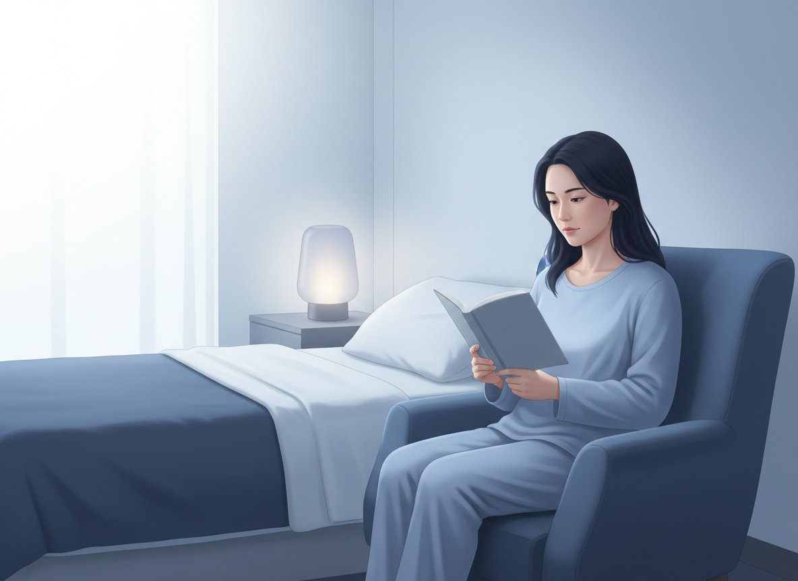

낮 동안 만드는 밤의 잠 — 이 네 가지부터
낮 동안 만드는 밤의 잠 — 이 네 가지부터
잠드는 시간보다
기상 시각
매일 같은 시각에 고정하기
일어나면
햇빛 + 걷기
아침 햇빛을 보고 낮에 걷기
카페인은
낮 12시
까지만, 그 뒤로는 끊기
잠들기
3시간 전
부터 휴대폰·TV 멀리하기
 그래도 잠이 안 온다면
그래도 잠이 안 온다면

| 누워도 잠이 안 올 때 · 15분 규칙 | 멜라토닌 · MELATONIN |
|---|---|
|
|
 수면제(졸피뎀 등)는 이렇게
수면제(졸피뎀 등)는 이렇게
향정신성의약품 · 원칙 세 가지
- 가끔, 짧게 — 필요한 기간만, 처방받은 용법 그대로 복용합니다
- 깊은 잠을 보장하지는 않습니다 — 약마다 효과와 부작용이 달라 처방받은 대로만 드세요
- 가족의 처방약도 나눠 먹지 마세요 — 법으로 금지돼 있고, 반응은 사람마다 다릅니다
- 오래 드셨다면 임의로 끊지 말고 의사와 상의해 줄이세요
흔한 오해 바로잡기
| 흔한 오해 | 의학적 사실 (바로 알기) |
|---|---|
| "누워 있으면 언젠가 잠든다" | 깨어서 오래 누워 있으면 침대가 뒤척이며 애쓰는 공간이 됩니다. 졸릴 때 눕는 것이 원칙입니다. |
| "가족 수면제를 잘라 먹어도 된다" | 향정신성의약품이라 타인에게 건네는 것 자체가 불법이고, 부작용도 사람마다 다릅니다. |
| "술 한잔 하면 잘 잔다" | 잠드는 느낌은 들어도 밤 후반에 자주 깹니다. 수면제와 함께 마시는 것은 특히 위험합니다. |
수면제 복용 뒤 기억나지 않는 행동(몽유·야간 식사·운전)이 있었다면 약을 더 드시지 말고 즉시 진료받으세요. 심하게 휘청이거나 넘어졌다면 다음 복용 여부를 스스로 정하지 말고 의료진에게 바로 연락해 지시를 받으세요(오래 드신 약은 갑자기 끊는 것도 위험합니다). 심한 코골이·목격된 무호흡·낮졸림이 있으면 단순 불면이 아닐 수 있습니다. 잠이 거의 없는데 기분이 들뜨거나 충동적으로 변했거나 자해·자살 생각이 든다면 즉시 의료진에게 알려 주세요. 실행할 생각이나 충동이 있거나 스스로 안전을 지키기 어렵다면 혼자 있지 말고 119에 연락하거나 응급실로 가세요.